The Drawing field shows a drawing of the rocket design currently loaded in memory

Introduction
Aerolab is a aerodynamic simulation program, specially intended for estimating drag, lift and stability of rockets at zero angle of attack in the velocity range from 0 to 8 Mach. Aerolab is based on published data from windtunnel experiments and numerical models including emperical and semiemperical methods. See the list of litterature for more information.
Aerolab makes it possible for the user to enter rocket dimensions and mass properties. The program then also calculates the center of gravity and inertial moments around pitch/yaw axis and roll axis, assuming rotational symmetry for the mass distribution.
Calculating aerodynamic parameters
Load or create a rocket configuration.
Select Options|Calculate in the main window to calculate its aerodynamic properties. Results are automatically displayed in the Plot window.
The default velocity range is 0-3 Mach, however different settings in the range from 0 to 8 Mach may be chosen from the Setup (see Creating or editing a rocket configuration).
Overview
The main window looks like this:
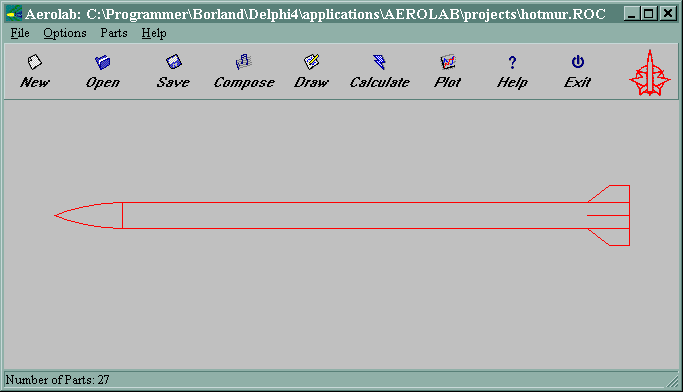
It features the following:
Main Menu
The main menu has 4 sub menu's:
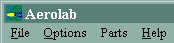
The File Menu facilitates operations on files.
The Options Menu is the access to changing what the software does.
The Parts Menu menu handles operations on mechanical parts.
The Help Menu menu gives access to the help features of the software.
Taskbar
The taskbar contains shortcuts to the most used topics from the Main menu
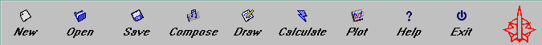
Drawing Field
The Drawing field shows a drawing of the rocket design currently loaded in memory
Parts Status
The Parts Status displays the number of mechanical parts defined for the current design
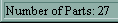
File Menu
Options Menu
Parts Menu
Help Menu
Creating or editing a rocket configuration
Press the OK button to accept the configuration. The setup dialog closes, and the new configuration is shown in the main window.
Changing the scale of a rocket configuration
Displaying results
Plot Window
Rocket Drawing
Working with parts
Parts Manager
Part Properties Dialog
Part Dimensions Dialog
Parts Combiner
Import Parts Dialog
Translation Dialog
Parts List
File Types
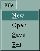
File|New clears the configuration from memory so that a new configuration may be created entirely from scratch. The list of mechanical parts is also cleared.
File|Open launches a dialog for loading a configuration from file to memory. When the file is loaded, the Drawing Field and Parts Status updates with the new configuration. The configuration files are by default assumed to reside in the Aerolab\Projects folder.
File|Save launches a dialog for writing the current configuration to a file. The configuration files are by default assumed to reside in the Aerolab\Projects folder.
File|Exit quits the program. There is no automatic saving of the current configuration.
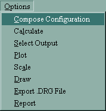
Options|Compose Configuration launches the setup dialog where the geometry and the conditions of the configuration can be edited.
Options|Calculate performs a calculation of the aerodynamical parameters of the current configuration and launches the plot window to display the results.
Options|Select Output launches the Plot Setup dialog where the default traces of the plotting of results may be switched on and off and where the selection is made between displaying the different results of the calculation.
Options|Plot launches the plot window to display the results of a calculation.
Options|Scale launches the Scale Configuration dialog, allowing to scale the dimensions of the entire configuration. Note that this will not affect the dimensions of any mechanical parts.
Options|Draw launches the Rocket Drawing where the current configuration is drawn with (optional) dimensions.
Options|Export .DRG File launches a dialog for saving the drag coefficient values of the current configuration in a format that is accepted by the "Launch" trajectory simulator software.
Options|Report launches a dialog for saving a HTML formatted report for the current configuration. The reports are by default assumed to reside in the Aerolab\Reports folder.
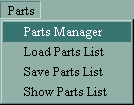
Parts|Parts Manager Launches the Parts Manager for mechanical parts.
Parts|Load Parts List launches a dialog for importing an existing parts list into the current design. The imported parts list overwrites any existing parts list in the currently loaded configuration. The parts lists are by default assumed to reside in the Aerolab\Parts folder.
Parts|Save Parts List launches a dialog for saving the parts list of the currently loaded configuration i a file. The parts lists are by default assumed to reside in the Aerolab\Parts folder.
Parts|Show Parts List displays the Parts List window containing the parts list of the currently loaded configuration and the sum total of masses and inertial moments.
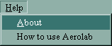
Help|About displays the About dialog with version and web site information.
Help|How to use Aerolab launches the aerolab help in the default HTML browser.
Select File|New or File|Open in the main window to create a rocket configuration. A rocket configuration can be edited in two ways, either by scaling or by editing the dimensions.
Select Options|Compose Configuration in the main window to launch the setup dialog for editing the rocket dimensions. The dialog has 5 tabs containing the parameters defining Nosecone - Body - Fins -Launch Lugs - Conditions. The rocket dimensions for each part are entered at their corresponding tab. The units of measure can be either mm, cm, m or in. All 'positions' refers to the nosecone apex.
Nosecone dimensions:
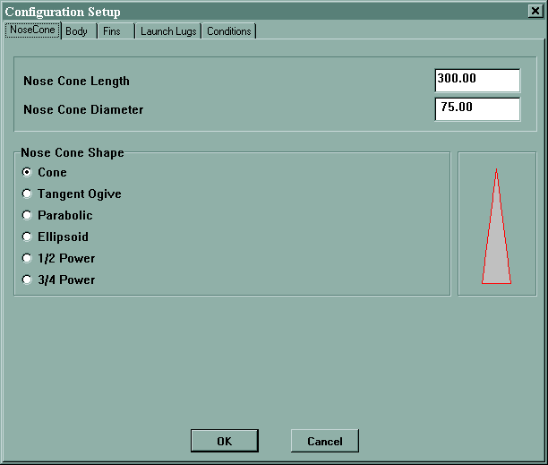
Enter the length and base diameter of the nosecone.
Select the shape of the nosecone - it can be:
A picture shows the shape of the selected nose cone type.
Body dimensions:
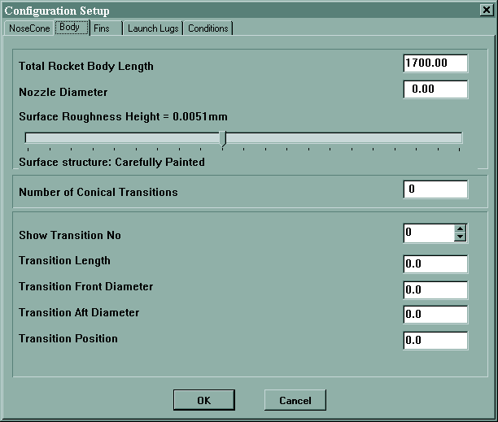
Enter the total length af the rotational symmetrical rocket body including nosecone and conical transitions.
Enter the rocket nozzle exit diameter.
Select the most suitable surface roughness with the slider.
Enter the number of conical transitions in the rocket. This number can be up to 10, however for a sound rocket configuration, this should be limited to 1 or 2 at maximum
For Each conical transition:
Toggle the 'Show transition No spinbutton to the apropriate number.
Enter the length of the conical transition.
Enter the diameter of the forward end of the transition.
Enter the diameter of the aft end of the transition.
Enter the distance from the nosecone apex to the forward end of the transition.
Fin dimensions:
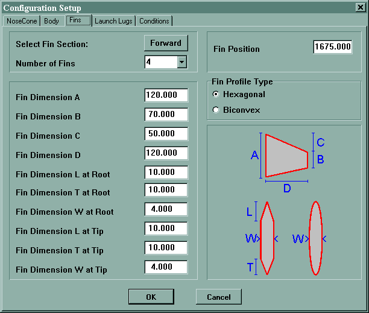
The number of fin sections is limited 2, labeled 'forward' and 'aft'. If there is only one fin section, it is automatically labeled 'forward'. If a configuration is designed with the forward fin section positioned aft of the aft fin section, Aerolab will automatically switch the designation of the fin sections.
For each fin section:
Select the fin section - forward or aft
Choose the number of fins i the fin section 0 - 3 - 4 or 6. Choosing zero deletes the fin section.
Enter the distance from the nosecone apex to the forward point of the fins root chord as the fin position.
The body diameter at the fin section is automatically calculated.
Select the profile type of the fins, either biconvex or a general hexagonal shape.
Enter the dimensions of the fin as illustrated on the picture.
Launch Lug dimensions:
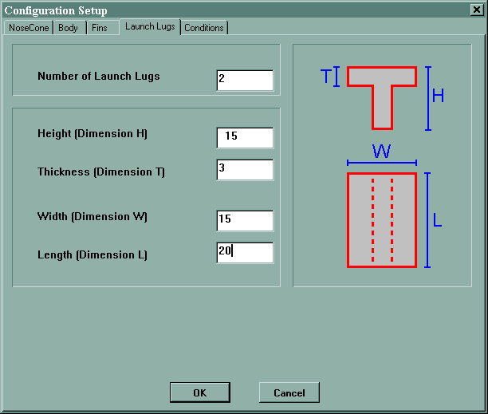
Aerolab handles only T shaped launch lugs. Lugs of other shapes should be transformed into a T shape with the same surface area.
Enter the Height of the "T", the width of the "T", the material thickness and the length of the launch lug as illustrated. More lugs are allowed by setting the number of lugs.
Conditions:
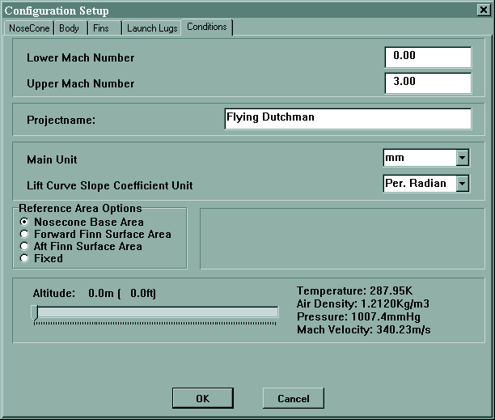
Enter the lower limit Mach number for the calculation (0 is default).
Enter the upper limit mach number for the calculation (3.0 is default).
Enter an optional name of the rocket project.
Select the main length unit for the rocket dimensions, either mm, cm, m or in.
Select the lift curve slope unit, either pr. degree or pr. radian.
Select the reference area, either nosecone base area, surface area for forward or aft finns or a fixed user defined area.
Set the atmospheric conditions in the range of 0-20km with the altitude slider.
It is possible to scale the complete rocket configuration for - for instance - make it easier to compare different configurations at similar Reynolds Numbers.
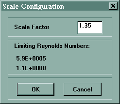
Select Options|Scale from the main window. The Scale Configuration dialog now appears. The dialog shows the current minimum and maximum values for the current configuration for the selected Mach number range.
Select the scaling factor and press the OK button to close the dialog.
The results of a calculation is available in graphical form. Select Options|Select Output to display the Plot Setup dialog.
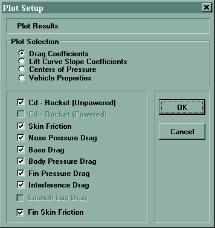
This dialog gives the option to choose between the
For each result type, a list of specific results are displayed. Check the appropriate topics from the result list. When finished, press OK to close the dialog.
Select Options|Calculate from the main window to calculate the aerodynamic parameters of the current configuration and automatically display the Plot Window - or simply Options|Plot if calculation has already been done. The plot window appears with a graphical representation of the results, according to the selections in the Plot Settings dialog.
The plot shows a graph with the selected outputs as individually colored traces.
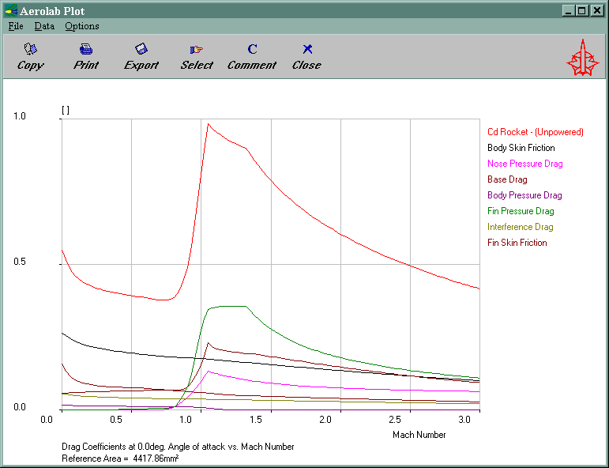
The features of the Plot Window may be accessed through its menu or its taskbar. There are 3 menu points:
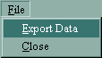
The File menu handles closing th window and exporting the data. When File|Export Data is chosen, a dialog opens for saving the data displayed as traces on the graph. Changing the kinds and number of traces on the graph also changes the exported data. Data is exported in a simple ASCII format, adequate for importing in a spreadsheet or a text editor. The default location for exported data is the Aerolab\Export folder.
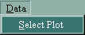
The Data|Select Plot launches the Plot Setup dialog for reselecting the traces to display on the plot.
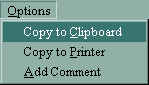
The plot may be copied to clipboard by selecting Options|Copy to Clipboard.
Printing the plot is initiated by selecting Options|Copy to Printer.
A comment may be added to the plot by selecting Options|Add Comments. This will open a edit field in the taskbar:
Edit the comment and press [ENTER], and the comment is added to the plot:
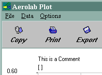
The taskbar of the Plot Window provides shortcuts for all of the menu points of the Plot Window - plus an additional shortcut for the About box.
Select Options|Draw in the main window to display a complete drawing of the rocket configuration. The drawing has options for displaying the rockets dimensions, for showing the detils of the fins and for showing its stability characteristica.
The features of the Rocket Drawing are accessible through its menu or its taskbar
File|Close closes the rocket drawing.
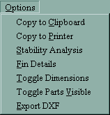
Use Options|Copy to Clipboard to copy the drawing bitmap to the clipboard or
select Options|Copy to Printer to print the drawing bitmap on the default printer.
Stability data is added to the drawing by selecting Options|Stability Analysis. The markers for CP and CG are placed on the drawing showing their movements throughout the flight. If there are no parts defined for the current configuration, only CP is shown, and if the aerodynamic parameters have not been calculated, the CP will be calculated by the Barrowman method.
Options|Fin Details shows the details of the fins, including drawings of their profiles.
Options|Toggle Dimensions will turn off (or on) the mechanical dimensions of the rocket.
Options|Parts Visible will turn on (or off) the rendering of mechanical parts of the rocket. Parts that have one of the predefined geometrical shapes will be shown accordingly while user defined shapes will be shown only as circles indicating their center of gravity.
Options|Export to DXF create a DXF formatted file of the rocket drawing. The resulting DXF file may be imported in most popular CAD software programs or other drawing softwares. The resulting DXF file is by default assumed to reside in the Aerolab/Export folder.
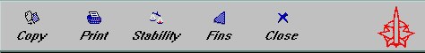
The Rocket Drawing taskbar has shortcuts for the following menu points:
Aerolab makes it possible to calculate the center of gravity and the intertial moments of the rocket configuration. The basic tool for the mechanical properties is the Parts Manager, in which all parts of the rocket can be specified to a rather detailed level, or in a very basic level, though reducing the precision of the inertial moment calculation.
The mechanical properties is kept in a Parts list. It is possible to create a Parts list via the Parts Manager, or by loading a parts list from a file. Once the Parts list is loaded, it can be displayed, edited or saved to disk.
Note that the mechanical parts in the parts list are not in any way linked to the definitions of the rocket body, thus changing the dimensions of a rocket does not change its parts list or vice versa.
The Parts Manager keeps track of the mechanical parts in a rocket. It is reached by selecting Parts|Parts Manager from the main window.
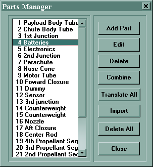
From within the Parts Manager it is possible to do the following:
Add a new part:
This action creates a new part. Press the 'Add Part' button to launch the Part Properties Dialog with a new part.
Edit part:
This action edits an existing part. Select a part and press the 'Edit' button to launch the Part Properties Dialog with the selected part.
Delete part:
This action deletes an existing part. Select a part and press the 'Delete' button to delete the part.
Combine parts:
This action is for merging multiple parts into one single part. Press the 'Combine' button to launch the Parts Combiner
Translate parts:
This action is for moving all parts along the rocket center axis. Press the 'Translate All' button to launch the translation dialog.
Import parts:
This action is for importing parts from another Parts list. Press the 'Import' button to launch the Parts Import dialog.
Delete All:
This action deletes all parts in the Parts list. Press the 'Delete All' button to delete all parts.
Close:
This action closes the Parts Manager. Press the 'Close' button to leave the Parts Manager.
The Part Properties Dialog is the tool for editing the properties of a part -either a new part or an existing part.
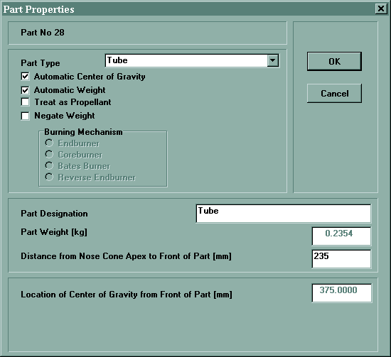
Select the part type from the drop-down list of several geometrical shapes or a user object. Selecting a geometrical part launches the Part Dimensions Dialog.
For geometrical parts, Aerolab can calculate the center of gravity automatically. This feature can be enabled or disabled by checking the 'Automatic Center of Gravity' checkbox.
Aerolab calculates the mechanical properties of the rocket with and without propellant. Check the 'Treat as Propellant' checkbox to define the part as propellant.
For propellant parts defined as either being tubular or cylindrical, a burn model may be specified. The burn model describes the way the rocket looses mass during burn. As it is assumed, that the mass decreases linearly with the Mach number, the center of gravity and inertial moments are calculated as functions of the Mach number.
In some situations it can be handy to a 'reverse combination' of parts. To support this, a part with negative mass can be defined by checking the 'Negate Weight' checkbox.
Enter the name of the part in the Part Designation field.
For User Objects, enter the weight of the part in kg.
Enter the distance of the most forward point of the part to the Nosecone apex in mm.
For parts with manual center of gravity, enter the distance from the most forward point of the part to the center of gravity of the part in mm.
For User Objects, enter the pitch (yaw) intertial moment around the nosecone apex in kg*m2.
For User Objects, enter the roll inertial moment around the rocket center axis in kg*m2.
Note that for parts that are not user objects, their inertial moments are calculated from the part weight under the assumption of homogenious density.
Press the OK button to accept the part.
The Part Dimensions Dialog is the tool for editing mechanical parts of certain geometrical shapes.
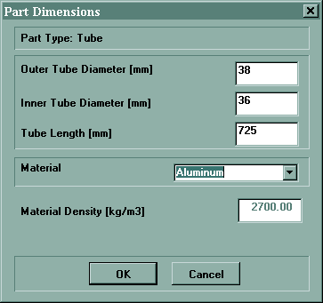
The type of part has already been selected in the Part Properties Dialog
Enter the dimentions of the specific part, and select the part material from the 'Material' drop-down list. The density of the part material is the only required material property. If no suitable material is found in the list, choose User Material and type in the material density manually.
Press the OK button to accept the part.
The Parts Combiner is a tool for combining several parts to one single part. The dialog consists of the Rocket Parts List holding all the parts in the Parts list, and the New Combined Part list to which the parts destined for combination can be transferred.
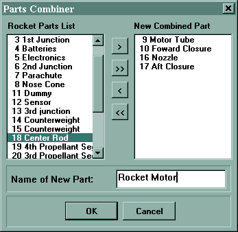
Select a part from the Rocket Parts List and transfer it to the New Combined Part by pressing the '>' key or press the '>>' key to transfer all parts from the Rocket Parts List to the New Combined Part.
To transfer a part back to the Rocket Parts List, select the part from the New Combined Part list and press the '<' key. To transfer all parts on the New Combined Part list back to the Rocket Parts List press the '<<' key.
Once the New Combined Part holds all the proper parts, enter a name for the new part and press the OK button. The parts forming the new combined part is then deleted from the overall parts list, and replaced by the new part, thus preserving the overall mass and inertial moment properties.
NOTE: Propellant parts may not be combined!
The Import Parts dialog gives access to parts form another rocket design or from a parts list that has been stored as a separate file.
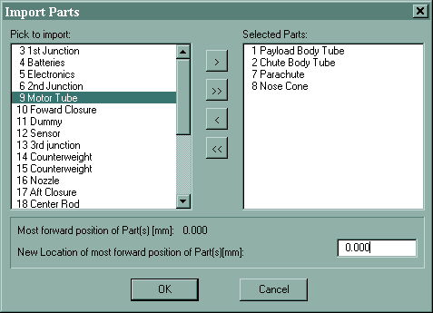
The Import Parts Dialog consists of two lists - a Pick to import list and a Selected Parts list. The Pick to import list holds the parts in the parts list to import. The Selected Parts list holds the list of parts to actually import into the current design.
Select a part from the Pick to import list and press the '>' key to transfer it to the Selected Parts list. To transfer all parts press the '>>' key.
To remove a part from the Selected Parts list, select the part and press the '<' button, or press the '<<' button to remove all parts from the Selected Parts list and transfer them back to the Pick to import list.
When parts are imported from another design (or parts list), their location(s) may need to be changed. The location of the most forward part in the Selected Parts list is displayed. If this position is acceptable, then press the OK button to import the part(s) - otherwise change the location to place the part(s) correctly in the current design. Note that this operation will translate all the selected parts according to the new placement of the most forward part. Import only one part at a time if they need to be placed individually - or import all parts in one operation and edit them individually afterwards.
Press the OK button to when ready to import the parts on the Selected Parts list into the current design.
The parts in the Parts list can all be translated along the rocket center axis.
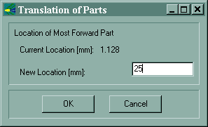
Enter the new location of the most forward part in mm.
Press the OK button to accept.
The Parts List shows an overview of the mechanical parts that are defined for the rocket. It lists the mass and inertial moments of each of the parts and the sum total for the entire rocket in its full and empty conditions.
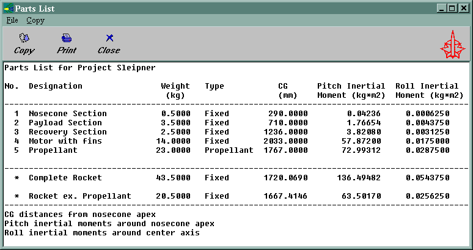
The menu and toolbar of the Parts List supports the following:
Aerolab supports the following file types:
| *.ROC | The main file format describing the rockets dimensions. |
| *.DRG | Write only. Export of drag coefficients for the LAUNCH trajectory calculation. |
| *.DAT | Write only. Export of data in ASCII format. |
| *.PTL | Parts list file format containing mass properties of the rocket. |
| *.DXF | Rocket drawing in the popular DXF format for varoius CAD programs (export only). |
Litterature
Aerolab is based on the following litterature:
USAF Stability and control DATCOM
Flight Control Division
Air Force Flight Dynamics Laboratory
Wright-Patterson Air Force Base, Ohio
1978
Boundary Layer Theory
Dr. H Schlichting
McGraw-Hill
Mechanics of Fluids
W. J. Duncan, A .S Thom, A. D. Young
Edward Arnold
Missile Configuration Design
S. S. Chin
McGraw-Hill 1961
NACA Tecnical Note 1032
NACA Technical Note 4201
NACA Tecnical Report 1386
NACA Tecnical Report 1153
NACA Tecnical Report 1353
NACA Tecnical Report 1374
NACA Tecnical Report 1253
NACA Tecnical Report 1227
NACA Tecnical Report 1238
NACA Tecnical Report 1307
NACA Research Memorandum RM A53A30
Nasa Nike Tomahawk Handbook
Thiokol Chemical Corporation
Astro-Met Division
P.O.Box 1497 Ogden, Utah
1966
Stabilisering af raketter ved Hjælp af Barrowmans metode
J. Franck
Dansk Amatør Raket Klub
Theory of Wing Sections
Ira h. Abbot, A. E. Von Doenhoff
Dover Publications, Inc 1958
MIL-HDBK-762(MI): DESIGN OF AERODYNAMICALLY STABILIZED
FREE ROCKETS
All values of the atmospheric parameters are from the US STANDARD ATMOSPHERE
SUPPLEMENTS, 1966 (60deg N, July)
Revision List
Version 1.0:
This is the basic version of Aerolab.
Version 1.1:
Intermediate version (not public).
Version 1.2:
This is basically a bug fixed with only a few new features. The major bugsfixes are:
- Annoying fin dimension problems fixed in setup form.
- CP calculation error in pr. degree mode.
- A rendering error when handling conical transitions.
The drawing form has been updated with the possibility of exporting to DXF and to switch off the measurements. Also the positions of CP and CG are now marked in a more intuitive way.
Version 1.2.1:
- Fixed CP calculation error in pr. degree mode (tough one!).
Version 1.3.0:
- Fin pressure drag model updated with some obvious errors removed..
- Fixing of various bugs.
- Updated models for nosecone with body.
- Rocket drawing can now show mechanical parts.
- HTML format report generator.
- Help entirely rewritten, and now in HTML.
- Graphical brush up.
Version 1.3.1:
- Fixed "current fin" definition problem in partmanager.
Version 1.3.2:
- Fixed subsonic CP problem with flared rockets.
Acknowldements
PNG image support by Jack Goman - jack@SharePower.VirtualAve.net
Disclaimer & Copyright
This program is Copyright (C) 1998 - 2003 by Hans Olaf Toft (hot@vip.cybercity.dk),
All Rights Reserved.
Aerolab is provided as freeware with the following limitations:
Aerolab is freeware for any user that considers himself - or herself - as being a friend of the Danish Amateur Rocketry Club - DARK. It is not to be resold or distributed for sale with other programs which are for sale. The author offers no warranty of its fitness for any purpose whatsoever, and accepts no liability whatsoever for any loss or damage incurred by its use. Furthermore, Aerolab may not be used for commercial purposes - it is a tool for the amateur rocketry community only.
Aerolab is not a supported product. The author accepts no commitment or liability to address any problems that may be encountered in using it. However, further development and improvements are planned, and as such, the author is always interested to hear about any (major) bugs or deficiencies.
Keywords
Acknowldements
Add part
Atmospheric conditions
Background
Biconvex
Calculating aerodynamic parameters
Changing the scale of a rocket
Clear configuration
Combine parts
Comment
Conical nose
Conical transition
Contents
Creating or editing a rocket configuration
Delete part
Disclaimer
Displaying results
Drawing
DXF export
Edit part
Ellipsoid nose
File types
Fin section
Half power nose
Hexagonal
HTML report
Hypersonic optimum (3/4 power) nose
Import parts
Inertial moment
Introduction
Keywords
Launch lug
Length unit
Lift curve slope unit
Limit Mach numbers
Litterature list
Nozzle
Overview
Parabolic nose
Part dimensions
Part properties
Parts list
Parts
Parts visible
Plotting
Project name
Propellant
Reference area
Revisions
Scaling
Stability analysis
Surface roughness
Tangent ogive nose
Toggle dimensions
Translate parts